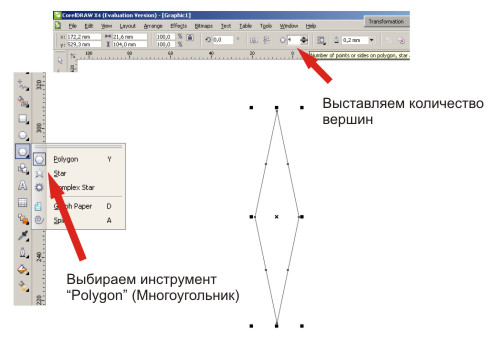
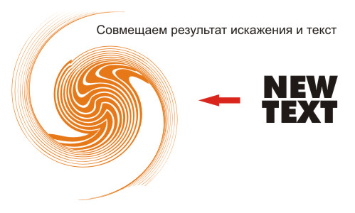
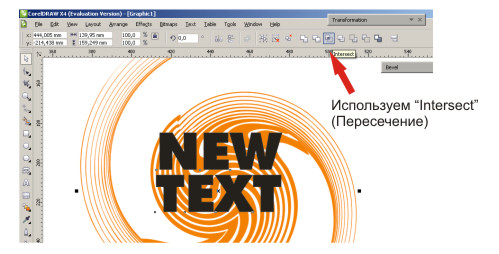

Декор текста 2
Этот урок - дополнение к уроку от дизайнера sergey
http://cdrpro.ru/forum/45-399-1?l9RmVE
Вначале небольшая корректировка:
Для создания ромба вовсе не нужно вращать и искажать квадрат.
Проще сразу воспользоваться другим инструментом.

Далее действуем как рассказал sergey
до момента использования “контейнера”. Мы поступим по-другому.


Ву а ля!
Воспользовавшись инструментом пересечения несколько раз и совместив результаты,
можно получить неожиданно интересные варианты оформления текста
При печати “контейнер” позволяет создать любые “интерьеры” внутри объекта.
Однако, в отличие от “контейнера” результат пересечения можно использовать для плоттерной порезки плёнки и создания наклеек.
И “весит” он меньше, так как является “чистокровным” вектором, со всеми вытекающими последствиями...
Спасибо за дополнение!
К сожалению результаты пересечений, исключений и т.д. — необратимы.
Да и текст становится кривой. А вдруг грамматическая ошибка?
Так что не торопитесь. Контейнер рулит!
Честно говоря, мне больше нравится вариант с пересечением, так как более отвечает сущетву поставленной задачи.
Аргумент Sergeya о возможности редактирования спорный: если заменить букву, тогда да, если же добавить символы, то крайние уйдут за пределы заливки.
К тому же есть и нерациональные действия, когда простое циклическое дублирование заменяется перетеканием.
Конечно, CorelDRAW хороша тем, что допускает инвариантность решения различных задач, но большинство уроков всё-таки ориентированы на начинающих, поэтому не стоит зарождать путаницу в их головах.
sergey, пару раз обжёгшись на поспешном удалении промежуточного варианта, я, например, как правило, оставляю файл со шрифрами на будущее. ибо уже неоднократно приходилось через время что-то добавлять/изменять. даже если идёт речь о буклете на 240 страниц, лучше оставить одну шаблонную без перевода в кривые, на всякий случай. :)
Конечно надо понимать, что произойдёт, когда меняешь слово из 3-х букв на слово из 15. Это надо предусмотреть.
Не вижу ничего нерационального. Один из способов копирования.
Это дополнение, как раз-то расчитано не на начинающего. Начинающий не возьмётся готовить материал для плотерной резки.
С Уважением!
stasys,
Всегда надо оставлять незакривлённый документ + знать где лежит к нему шрифт :)
sergey,
Говоря о циклическом дублировании, я имел в виду полоски для тигровой шкуры,
там о плоттерной резке речи не было.
Solowejka, я понял. Я тоже о полосках говорил.
sergey , это дополнение сделано в 14-ой версии. при пересечении получилось три объекта: узор, узорчатый текст (естественно как кривая) и сам текст в оригинале (без перевода в кривую). поэтому отредактировать и повторить процесс не представляет сложности.
про это я упомянул не для таких бизонов дизайна как мы с тобой, а именно для новичков. может кто прислушается и не будет потом рыдать над загубленным макетом)))
stasys,
Solowejka,
http://cdrpro.ru/forum/45-399-1
здесь про тигра и ничего про плёнки
P.S. Тема аж загорелась